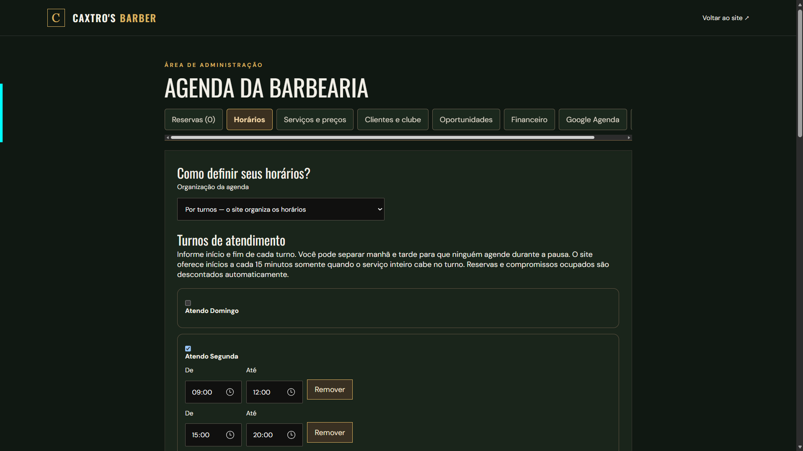
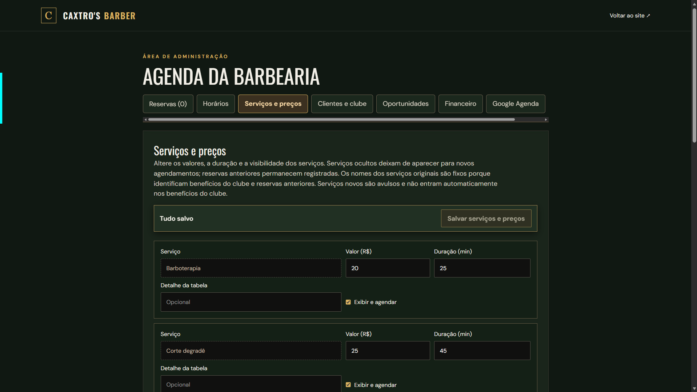
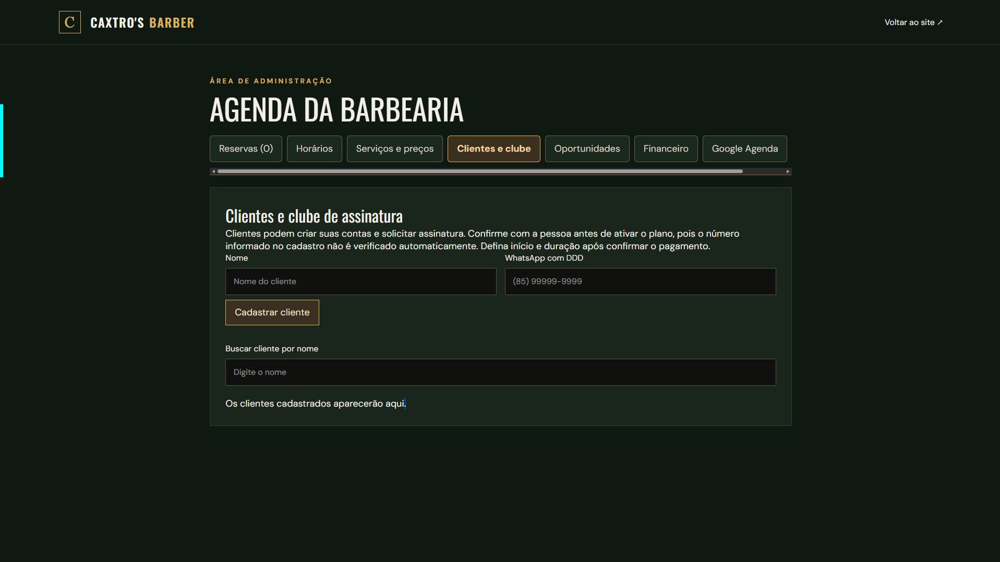
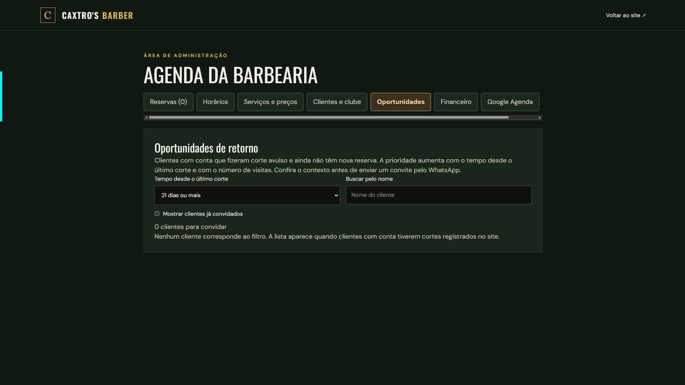
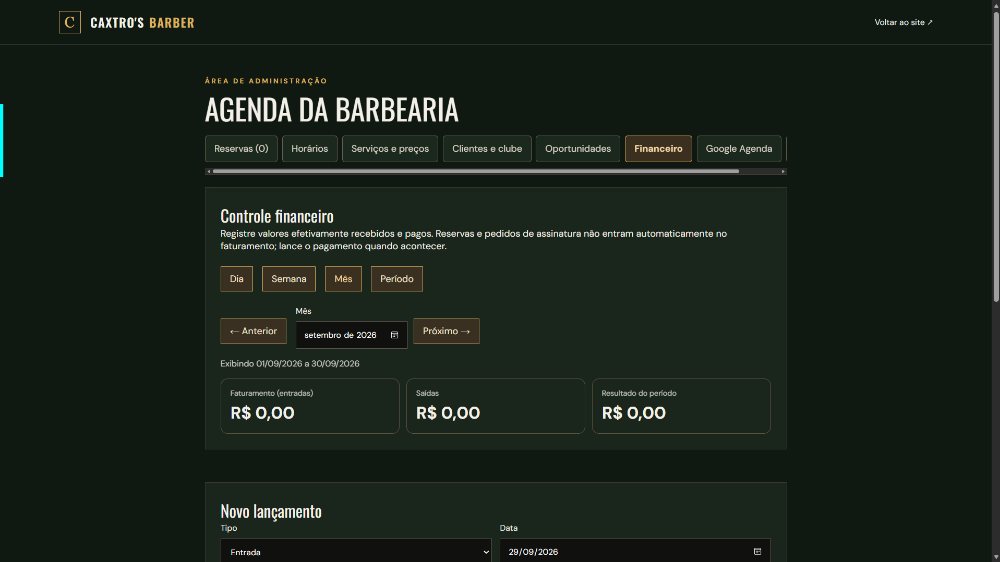
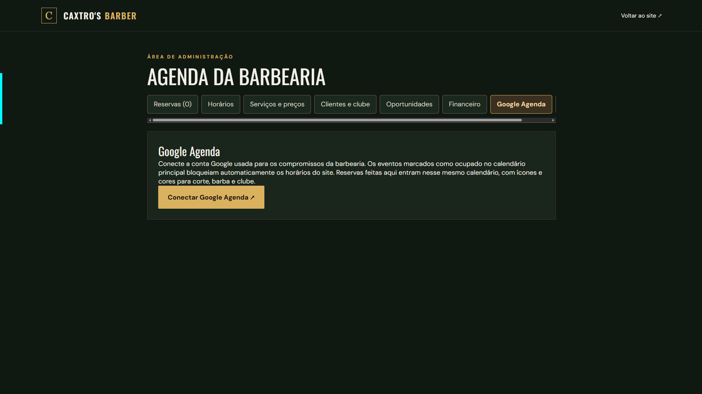

Serviços e valores
O visitante sabe o que pode agendar e quanto custa.

A Caxtros ganhou uma vitrine para seus serviços e um sistema de agendamento pensado para a rotina da barbearia.
Toque nas etapas para ver o site e a administração.
A cliente precisava conhecer os serviços e encontrar um horário sem depender de uma conversa para cada reserva. A proprietária já havia usado um aplicativo com mensalidade, mas o custo pesava.
O site reúne apresentação, preços, clube e reserva em um canal próprio. A agenda considera os turnos de atendimento e a duração dos serviços, com recursos de administração para a proprietária.
O visitante sabe o que pode agendar e quanto custa.
Escolha de serviço, dia e horário pelo celular.
Planos explicados e solicitação de adesão pela conta.
Controle de horários, serviços, reservas e clientes pelo celular.
Caminhos para encontrar a barbearia e tirar dúvidas.
Capturas do ambiente de teste, sem registros de clientes. Explore cada tela acima.






Me conte seu objetivo e eu ajudo a transformar isso em uma experiência simples para quem vai usar.